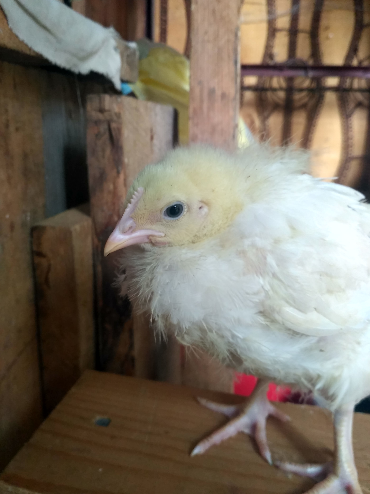

Вітаємо! Цей сайт створений для тих хто хоче купити курей або їх любить.
На цьому сайті ви зможете переглядати фото курей, читати цікаві історії
про них, писати відгуки та отримувати відповіді на запитання які ви хочете.
Також на сайті є калькулятори які зможуть вам допомогти з купівлею курей.
На цьому сайті ви будете дізнаватися про Гривка, Білої, Боягуза, Принцеси,
Значка та інших цікавих курей. Бажаю вам купити гарних курей!
Якщо ви хочете купити курей, краще запитати нас поради. Пишіть коментарі
та розказуйте які проблеми є і ми їх виправимо. Читайте нові коментарі, щоб
стати гарним фермером курей. Також пишіть які калькулятори треба ще зробити.
Пишіть, діліться досвід, дізнавайтесь нове за допомогою досвіду інших та коментарів.

Зареєструйтесь!
Створіть свій профіль за допомогою ім'я та пароля. Ви зможете опубліковувати
статті та різні фото. Допомогайте іншим дізнаватися все більше і більше нової
інформації як тримати бройлерів. Клікніть на кнопку Login і увійдіть або зареєструйтесь.
Користувачам буде корисно дізнаватися та читати статті інших користувачів. Також
без реєстрації вам не можна буде читати історії про курей.